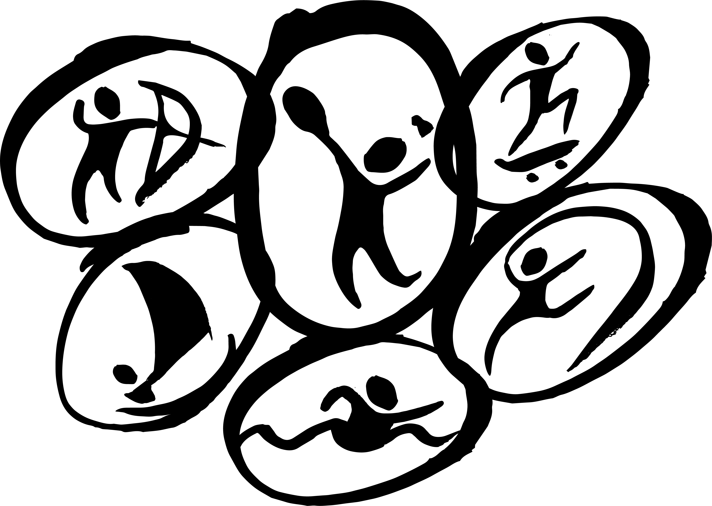
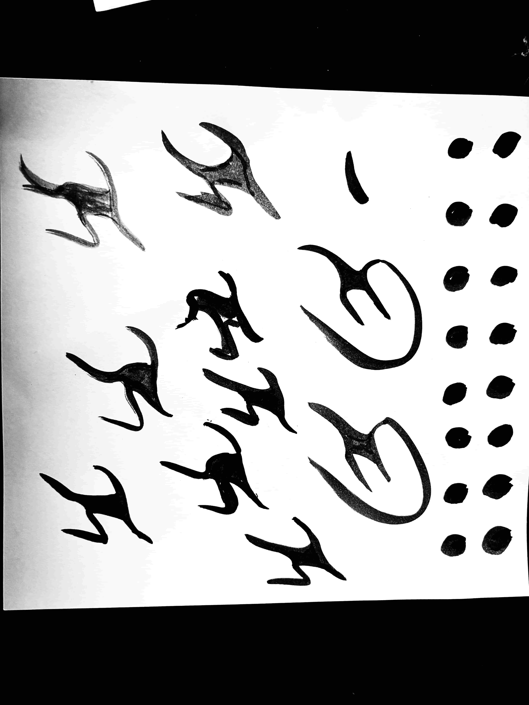
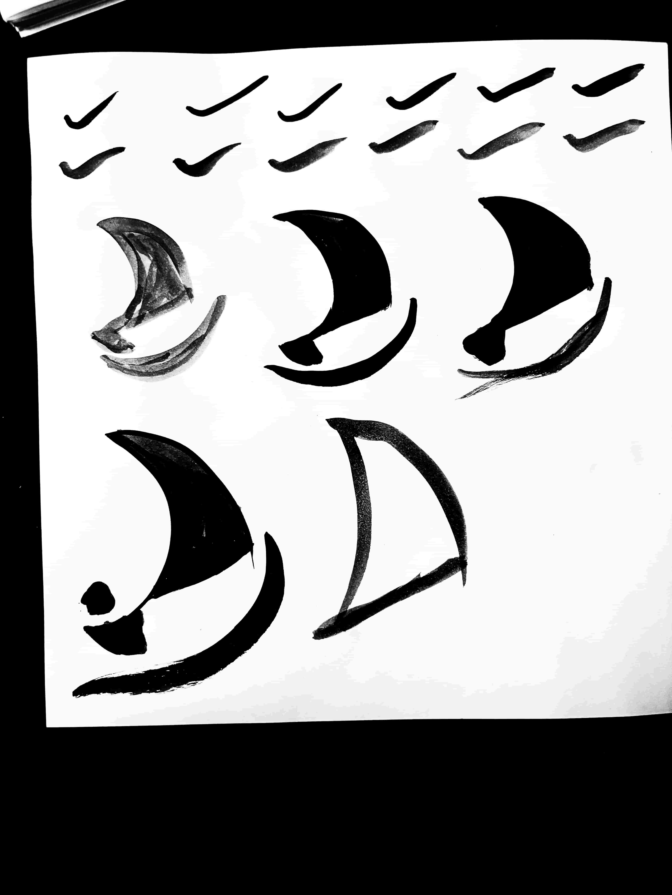
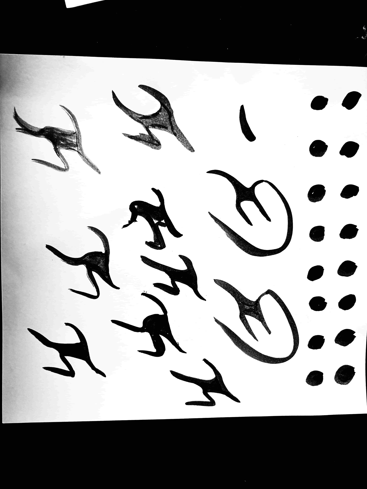
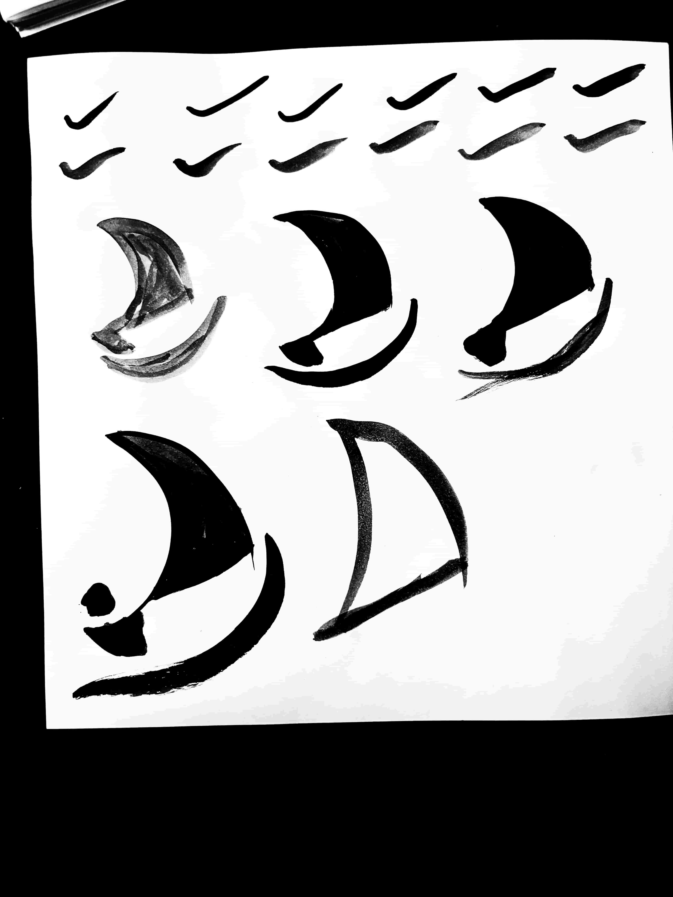

OLYMPIC PICTOGRAMS
In our ART127 class with Emily Moody, we were given the creative challenge of designing a set of Olympic pictograms in our own unique style. This project went far beyond simply using digital tools—it required us to deeply engage with the visual language of symbols. To begin, we researched the history of pictograms, exploring their evolution, purpose, and how they have been used across different Olympic Games and in other visual communication systems.
We analyzed how pictograms serve to transcend language barriers and convey information quickly and clearly through simplified yet powerful imagery. After this research phase, we were asked to choose six sports from either the Summer or Winter Olympics, and develop our own series of pictograms based on those events. The assignment encouraged us to think critically about form, motion, clarity, and style, while also incorporating elements that reflect our personal design approach.

HOW I STARTED
In this project, I explored the expressive potential of ink through varying line work and shapes, balancing simplicity with recognizability.
Once I had a solid form such as the head or even the body, I used both Photoshop and Illustrator to digitize and refine my designs. This involved tracing the ink drawings, cleaning up any imperfections, and adjusting proportions to ensure clarity and consistency across the set of pictograms.

 


